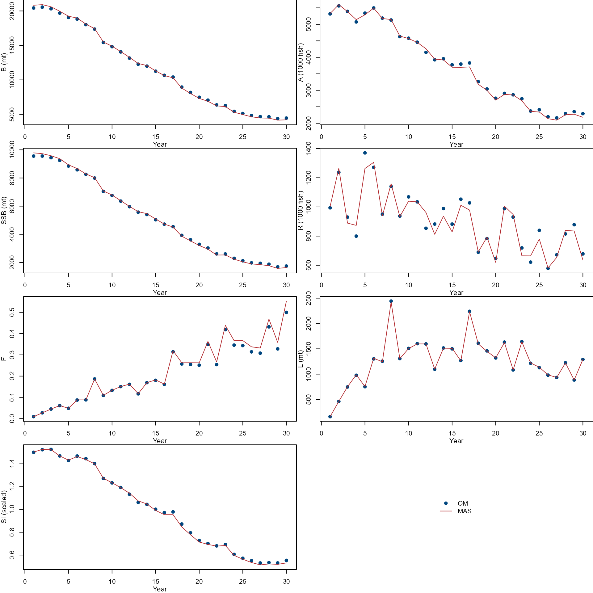
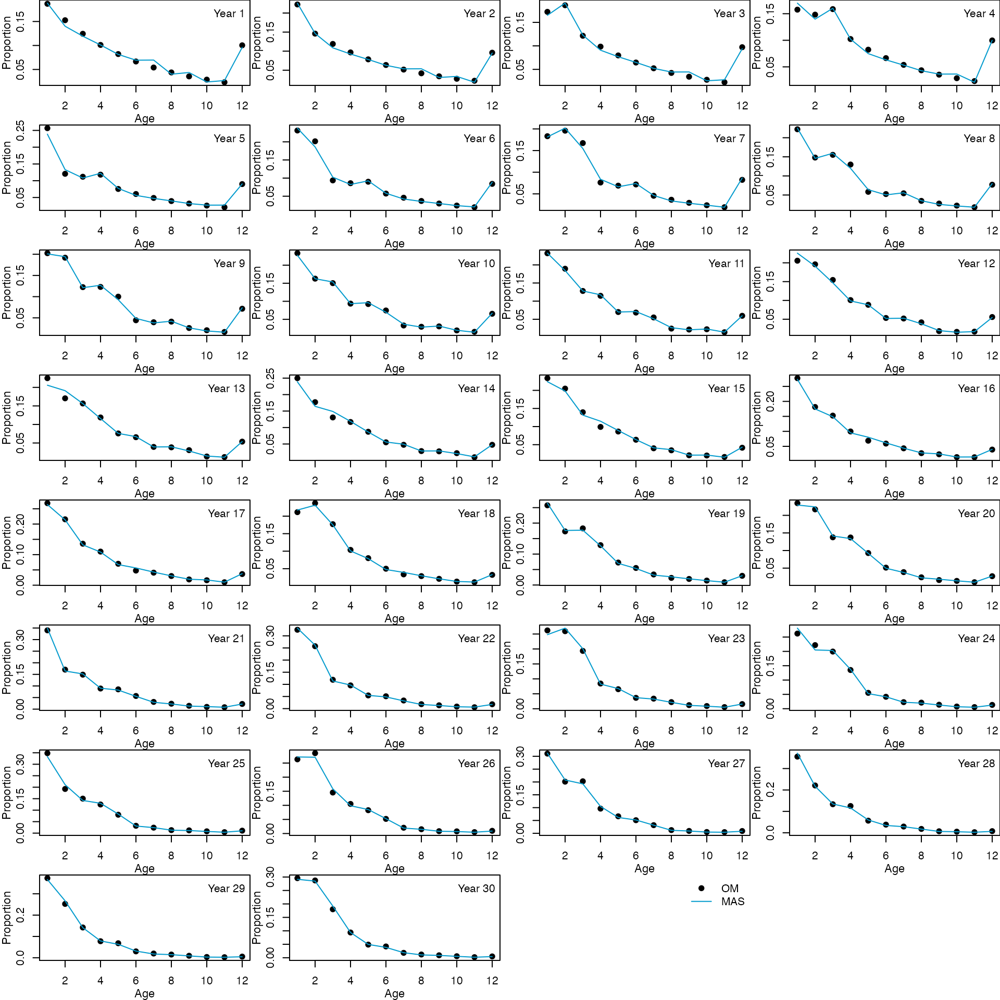

Model Comparison Project Example
Updated on 08/09/2021
Source:../../../vignettes/002_ModelComparisonProjectExample.Rmd
002_ModelComparisonProjectExample.RmdOverview
This vignette allows you to walk through an example using r4MAS (R interface to the Metapopulation Assessment System) to run MAS. The example uses outputs from the operating model (OM) of Age-structured stock assessment model comparison project as inputs in r4MAS. It is an single-species, single-fleet, and single-survey example. The general workflow is:
- Install packages
- Load OM outputs
- Load
r4MASmodule - Specify inputs
- Run
MASand check for convergence - Compare estimates from
MASwith true values from the OM
1. Install packages
remotes::install_github("nmfs-fish-tools/r4MAS")
library(r4MAS)
library(Rcpp)
library(jsonlite)
library(nmfspalette)If you receive errors related to C++ when loading r4MAS, please see the installation instructions from the main page.
2. Load OM outputs
data_path <- system.file("extdata", package = "r4MAS")
om_path <- file.path(data_path, "externalom_example")
load(file.path(om_path, "singlespecies.RData"))The OM includes om_input, om_output, and em_input data lists.
names(om_input)## [1] "fleet_num" "survey_num" "nyr"
## [4] "year" "ages" "nages"
## [7] "cv.L" "cv.survey" "n.L"
## [10] "n.survey" "logR_sd" "logf_sd"
## [13] "om_bias_cor" "bias_cor_method" "R0"
## [16] "h" "median_R0" "median_h"
## [19] "mean_R0" "mean_h" "SRmodel"
## [22] "M" "Linf" "K"
## [25] "a0" "a.lw" "b.lw"
## [28] "A50.mat" "slope.mat" "sel_fleet"
## [31] "sel_survey" "len" "W.kg"
## [34] "W.mt" "M.age" "mat.age"
## [37] "proportion.female" "selex_fleet" "selex_survey"
## [40] "N.pr0" "Phi.0" "logR.resid"
## [43] "logf.resid" "f" "initial_equilibrium_F"
names(om_output)## [1] "year" "SSB" "abundance" "biomass.mt"
## [5] "N.age" "L.age" "L.knum" "L.mt"
## [9] "msy" "f" "FAA" "survey_age_comp"
## [13] "survey_index" "survey_q"
names(em_input)## [1] "L.obs" "survey.obs" "L.age.obs" "survey.age.obs"
## [5] "n.L" "n.survey" "survey_q" "cv.L"
## [9] "cv.survey"
3. Load r4MAS module
Option 1:
r4mas <- Rcpp::Module("rmas", PACKAGE = "r4MAS")If you receive errors when using option 1, please use option 2:
# Find the path of dynamically-loaded file with extension .so on Linux, .dylib on OS X or .dll on Windows
libs_path <- system.file("libs", package = "r4MAS")
dll_name <- paste("r4MAS", .Platform$dynlib.ext, sep = "")
if (.Platform$OS.type == "windows") {
dll_path <- file.path(libs_path, .Platform$r_arch, dll_name)
} else {
dll_path <- file.path(libs_path, dll_name)
}
r4mas <- Rcpp::Module("rmas", dyn.load(dll_path))4. Specify inputs
General settings in the inputs
- Population
- Year, season, age, and area
- Recruitment, growth, maturity parameters
- Natural mortality
- Movement
- Initial deviations
- Sex ratio
- Fleet
- Index
- Age composition
- Likelihood components
- Selectivity
- Fishing mortality
- Survey
- Index
- Age composition
- Likelihood components
- Selectivity
- Catchability
- Build the
MASmodel
General settings of year, season, age, and area
nyears <- om_input$nyr
nseasons <- 1
nages <- om_input$nages
ages <- om_input$ages
area1 <- new(r4mas$Area)
area1$name <- "area1"Recruitment settings
recruitment <- new(r4mas$BevertonHoltRecruitment)
recruitment$R0$value <- om_input$R0 / 1000
recruitment$R0$estimated <- TRUE
recruitment$R0$phase <- 1
recruitment$h$value <- om_input$h
recruitment$h$estimated <- FALSE
recruitment$h$phase <- 3
recruitment$h$min <- 0.2001
recruitment$h$max <- 1.0
recruitment$sigma_r$value <- om_input$logR_sd
recruitment$sigma_r$estimated <- FALSE
recruitment$sigma_r$min <- 0
recruitment$sigma_r$max <- 1.0
recruitment$sigma_r$phase <- 2
recruitment$estimate_deviations <- TRUE
recruitment$constrained_deviations <- TRUE
recruitment$deviations_min <- -15.0
recruitment$deviations_max <- 15.0
recruitment$deviation_phase <- 2
recruitment$SetDeviations(om_input$logR.resid)
recruitment$use_bias_correction <- FALSEGrowth settings
In this example, we directly use weight-at-age data for the assessment.
growth <- new(r4mas$VonBertalanffyModified)
empirical_weight <- rep(om_input$W.kg, times = om_input$nyr)
survey_empirical_weight <- replicate(nages * nyears, 1.0)
growth$SetUndifferentiatedCatchWeight(empirical_weight)
growth$SetUndifferentiatedWeightAtSeasonStart(empirical_weight)
growth$SetUndifferentiatedWeightAtSpawning(empirical_weight)
growth$SetUndifferentiatedSurveyWeight(survey_empirical_weight)If you want to model length-at-age following a von Bertalanffy growth model, you can define the parameters related to growth.
growth$a_min$value <- min(om_input$ages)
growth$a_max$value <- max(om_input$ages)
growth$c$value <- 0.3
growth$lmin$value <- 5
growth$lmax$value <- 50
growth$alpha_f$value <- om_input$a.lw
growth$alpha_m$value <- om_input$a.lw
growth$beta_f$value <- om_input$b.lw
growth$beta_m$value <- om_input$b.lwNatural mortality settings
natural_mortality <- new(r4mas$NaturalMortality)
natural_mortality$SetValues(om_input$M.age)Initial deviation settings
initial_deviations <- new(r4mas$InitialDeviations)
initial_deviations$values <- rep(0.0, times = om_input$nages)
initial_deviations$estimate <- TRUE
initial_deviations$phase <- 2Creat the population
population <- new(r4mas$Population)
for (y in 1:(nyears))
{
population$AddMovement(movement$id, y)
}
population$AddNaturalMortality(natural_mortality$id, area1$id, "undifferentiated")
population$AddMaturity(maturity$id, area1$id, "undifferentiated")
population$AddRecruitment(recruitment$id, 1, area1$id)
population$SetInitialDeviations(initial_deviations$id, area1$id, "undifferentiated")
population$SetGrowth(growth$id)
population$sex_ratio <- 0.5Fleet settings
# Catch index values and observation errors
catch_index <- new(r4mas$IndexData)
catch_index$values <- em_input$L.obs$fleet1
catch_index$error <- rep(em_input$cv.L$fleet1, times = om_input$nyr)
# Catch composition data
catch_comp <- new(r4mas$AgeCompData)
catch_comp$values <- as.vector(t(em_input$L.age.obs$fleet1))
catch_comp$sample_size <- rep(em_input$n.L$fleet1, nyears * nseasons)
# Likelihood component settings
fleet_index_comp_nll <- new(r4mas$Lognormal)
fleet_index_comp_nll$use_bias_correction <- FALSE
fleet_age_comp_nll <- new(r4mas$Multinomial)
# Fleet selectivity settings
fleet_selectivity <- new(r4mas$LogisticSelectivity)
fleet_selectivity$a50$value <- om_input$sel_fleet$fleet1$A50.sel
fleet_selectivity$a50$estimated <- TRUE
fleet_selectivity$a50$phase <- 2
fleet_selectivity$a50$min <- 0.0
fleet_selectivity$a50$max <- max(om_input$ages)
fleet_selectivity$slope$value <- 1 / om_input$sel_fleet$fleet1$slope.sel
fleet_selectivity$slope$estimated <- TRUE
fleet_selectivity$slope$phase <- 2
fleet_selectivity$slope$min <- 0.0001
fleet_selectivity$slope$max <- 5
# Fishing mortality settings
fishing_mortality <- new(r4mas$FishingMortality)
fishing_mortality$estimate <- TRUE
fishing_mortality$phase <- 1
fishing_mortality$min <- 0.0
fishing_mortality$max <- 4
fishing_mortality$SetValues(om_output$f)
# Create the fleet
fleet <- new(r4mas$Fleet)
fleet$AddIndexData(catch_index$id, "undifferentiated")
fleet$AddAgeCompData(catch_comp$id, "undifferentiated")
fleet$SetIndexNllComponent(fleet_index_comp_nll$id)
fleet$SetAgeCompNllComponent(fleet_age_comp_nll$id)
fleet$AddSelectivity(fleet_selectivity$id, 1, area1$id)
fleet$AddFishingMortality(fishing_mortality$id, 1, area1$id)Survey settings
# Survey index values and observation errors
survey_index <- new(r4mas$IndexData)
survey_index$values <- em_input$survey.obs$survey1
survey_index$error <- rep(em_input$cv.survey$survey1, times = om_input$nyr)
# Survey composition
survey_comp <- new(r4mas$AgeCompData)
survey_comp$values <- as.vector(t(em_input$survey.age.obs$survey1))
survey_comp$sample_size <- rep(em_input$n.survey$survey1, times = om_input$nyr)
# Likelihood component settings
survey_index_comp_nll <- new(r4mas$Lognormal)
survey_index_comp_nll$use_bias_correction <- FALSE
survey_age_comp_nll <- new(r4mas$Multinomial)
# Survey selectivity settings
survey_selectivity <- new(r4mas$LogisticSelectivity)
survey_selectivity$a50$value <- om_input$sel_survey$survey1$A50.sel
survey_selectivity$a50$estimated <- TRUE
survey_selectivity$a50$phase <- 2
survey_selectivity$a50$min <- 0
survey_selectivity$a50$max <- max(om_input$ages)
survey_selectivity$slope$value <- 1 / om_input$sel_survey$survey1$slope.sel
survey_selectivity$slope$estimated <- TRUE
survey_selectivity$slope$phase <- 2
survey_selectivity$slope$min <- 0.0001
survey_selectivity$slope$max <- 5
# Create the survey
survey <- new(r4mas$Survey)
survey$AddIndexData(survey_index$id, "undifferentiated")
survey$AddAgeCompData(survey_comp$id, "undifferentiated")
survey$SetIndexNllComponent(survey_index_comp_nll$id)
survey$SetAgeCompNllComponent(survey_age_comp_nll$id)
survey$AddSelectivity(survey_selectivity$id, 1, area1$id)
# Catchability settings
survey$q$value <- em_input$survey_q$survey1
survey$q$min <- 0
survey$q$max <- 10
survey$q$estimated <- TRUE
survey$q$phase <- 1Build the MAS model
mas_model <- new(r4mas$MASModel)
mas_model$nyears <- nyears
mas_model$nseasons <- nseasons
mas_model$nages <- nages
mas_model$extended_plus_group <- max(om_input$ages)
mas_model$ages <- ages
mas_model$catch_season_offset <- 0.0
mas_model$spawning_season_offset <- 0.0
mas_model$survey_season_offset <- 0.0
mas_model$AddPopulation(population$id)
mas_model$AddFleet(fleet$id)
mas_model$AddSurvey(survey$id)
5. Run MAS and check for gradients
Value and gradient of estimated paramter
parameter <- unlist(mas_output$estimated_parameters$parameters)
parameter_table <- as.data.frame(matrix(parameter, ncol = 3, byrow = TRUE))
colnames(parameter_table) <- c(
"Parameter",
"Value",
"Gradient"
)
parameter_table$Value <- round(as.numeric(parameter_table$Value),
digits = 6
)
parameter_table$Gradient <- round(as.numeric(parameter_table$Gradient),
digits = 6
)
parameter_table## Parameter Value Gradient
## 1 q_1 0.000341 0.001485
## 2 log_R0_1 6.926892 -0.000427
## 3 recruitment_deviations[0]_1 -0.020000 0.000000
## 4 recruitment_deviations[1]_1 0.221387 -0.000011
## 5 recruitment_deviations[2]_1 -0.130769 -0.000012
## 6 recruitment_deviations[3]_1 -0.146839 -0.000009
## 7 recruitment_deviations[4]_1 0.224385 -0.000014
## 8 recruitment_deviations[5]_1 0.261688 -0.000015
## 9 recruitment_deviations[6]_1 -0.064674 -0.000008
## 10 recruitment_deviations[7]_1 0.149338 -0.000012
## 11 recruitment_deviations[8]_1 -0.063122 -0.000015
## 12 recruitment_deviations[9]_1 0.058435 -0.000021
## 13 recruitment_deviations[10]_1 0.058928 -0.000009
## 14 recruitment_deviations[11]_1 -0.006859 -0.000020
## 15 recruitment_deviations[12]_1 -0.166852 -0.000017
## 16 recruitment_deviations[13]_1 -0.015228 -0.000010
## 17 recruitment_deviations[14]_1 -0.134308 -0.000011
## 18 recruitment_deviations[15]_1 0.076671 -0.000017
## 19 recruitment_deviations[16]_1 0.055050 -0.000020
## 20 recruitment_deviations[17]_1 -0.283909 -0.000014
## 21 recruitment_deviations[18]_1 -0.118595 -0.000014
## 22 recruitment_deviations[19]_1 -0.346835 -0.000013
## 23 recruitment_deviations[20]_1 0.158334 -0.000021
## 24 recruitment_deviations[21]_1 0.120098 -0.000019
## 25 recruitment_deviations[22]_1 -0.195391 -0.000016
## 26 recruitment_deviations[23]_1 -0.196722 -0.000013
## 27 recruitment_deviations[24]_1 -0.000490 -0.000014
## 28 recruitment_deviations[25]_1 -0.267316 -0.000009
## 29 recruitment_deviations[26]_1 -0.124959 -0.000009
## 30 recruitment_deviations[27]_1 0.134465 -0.000007
## 31 recruitment_deviations[28]_1 0.142506 -0.000004
## 32 recruitment_deviations[29]_1 -0.087988 -0.000001
## 33 logistic_selectivity_a50_2 1.440262 -0.000002
## 34 logistic_selectivity_slope_2 0.532504 0.000002
## 35 logistic_selectivity_a50_1 2.095676 -0.000017
## 36 logistic_selectivity_slope_1 1.075210 0.000013
## 37 fishing_mortality[14][0]_1 0.182091 0.000021
## 38 fishing_mortality[23][0]_1 0.366935 0.000002
## 39 fishing_mortality[4][0]_1 0.048639 -0.000292
## 40 fishing_mortality[1][0]_1 0.026996 -0.000468
## 41 fishing_mortality[17][0]_1 0.262693 0.000048
## 42 fishing_mortality[13][0]_1 0.169254 -0.000029
## 43 fishing_mortality[3][0]_1 0.061294 -0.000078
## 44 fishing_mortality[12][0]_1 0.117229 -0.000059
## 45 fishing_mortality[19][0]_1 0.262611 0.000005
## 46 fishing_mortality[26][0]_1 0.332156 -0.000021
## 47 fishing_mortality[5][0]_1 0.088201 -0.000070
## 48 fishing_mortality[15][0]_1 0.162248 -0.000090
## 49 fishing_mortality[16][0]_1 0.319556 0.000000
## 50 fishing_mortality[28][0]_1 0.358597 0.000012
## 51 fishing_mortality[27][0]_1 0.468033 -0.000027
## 52 fishing_mortality[18][0]_1 0.262837 0.000024
## 53 fishing_mortality[2][0]_1 0.045003 -0.000238
## 54 fishing_mortality[8][0]_1 0.109586 -0.000029
## 55 fishing_mortality[25][0]_1 0.337684 0.000046
## 56 fishing_mortality[24][0]_1 0.367056 -0.000008
## 57 fishing_mortality[6][0]_1 0.088079 0.000003
## 58 fishing_mortality[29][0]_1 0.552716 -0.000045
## 59 fishing_mortality[7][0]_1 0.186261 0.000010
## 60 fishing_mortality[0][0]_1 0.009294 -0.001743
## 61 fishing_mortality[10][0]_1 0.151097 0.000033
## 62 fishing_mortality[11][0]_1 0.162170 0.000019
## 63 fishing_mortality[21][0]_1 0.266599 0.000034
## 64 fishing_mortality[9][0]_1 0.133219 0.000019
## 65 fishing_mortality[20][0]_1 0.363147 0.000031
## 66 fishing_mortality[22][0]_1 0.438639 0.000005
## 67 f_initial_deviations[0]_1 0.701388 -0.000006
## 68 f_initial_deviations[1]_1 0.606472 -0.000006
## 69 f_initial_deviations[2]_1 0.646220 -0.000006
## 70 f_initial_deviations[3]_1 0.679720 -0.000006
## 71 f_initial_deviations[4]_1 0.663435 -0.000005
## 72 f_initial_deviations[5]_1 0.702999 -0.000004
## 73 f_initial_deviations[6]_1 0.906244 -0.000006
## 74 f_initial_deviations[7]_1 0.557301 -0.000003
## 75 f_initial_deviations[8]_1 0.840329 -0.000004
## 76 f_initial_deviations[9]_1 0.438346 -0.000002
## 77 f_initial_deviations[10]_1 0.756036 -0.000002
## 78 f_initial_deviations[11]_1 0.521295 -0.000009
## 79 m_initial_deviations[0]_1 0.701388 -0.000006
## 80 m_initial_deviations[1]_1 0.606472 -0.000006
## 81 m_initial_deviations[2]_1 0.646220 -0.000006
## 82 m_initial_deviations[3]_1 0.679720 -0.000006
## 83 m_initial_deviations[4]_1 0.663435 -0.000005
## 84 m_initial_deviations[5]_1 0.702999 -0.000004
## 85 m_initial_deviations[6]_1 0.906244 -0.000006
## 86 m_initial_deviations[7]_1 0.557301 -0.000003
## 87 m_initial_deviations[8]_1 0.840329 -0.000004
## 88 m_initial_deviations[9]_1 0.438346 -0.000002
## 89 m_initial_deviations[10]_1 0.756036 -0.000002
## 90 m_initial_deviations[11]_1 0.521295 -0.000009
6. Compare estimates from the MAS with true values from the OM
Aggregate true values of key variables from the OM
om <- list()
om$biomass <- om_output$biomass.mt
om$abundance <- om_output$abundance / 1000
om$ssb <- om_output$SSB
om$recruit <- om_output$N.age[, 1] / 1000
om$f <- apply(om_output$FAA, 1, max)
om$landing <- om_output$L.mt$fleet1
om$survey <- om_output$survey_index$survey1
om$msy <- om_output$msy$msy
om$fmsy <- round(om_output$msy$Fmsy, digits = 3)
om$ssbmsy <- om_output$msy$SSBmsy
om$fratio <- om$f / om$fmsy
om$ssbratio <- om$ssb / om$ssbmsy
om$agecomp <- apply(om_output$N.age / 1000, 1, function(x) x / sum(x))
om$r0 <- om_input$R0 / 1000
om$q <- om_output$survey_q
om$selexparm_fleet <- om_input$sel_fleet
om$selexparm_survey <- om_input$sel_survey
om$recruit_deviation <- om_input$logR.resid
Aggregate estimates of key variables from the MAS
Still need to add R0, biological reference points, and selectivity-at-age to MAS outputs.
popdy <- mas_output$population_dynamics
pop <- popdy$populations[[1]]
flt <- popdy$fleets[[1]]
srvy <- popdy$surveys[[1]]
mas <- list()
mas$biomass <- unlist(pop$undifferentiated$biomass$values)
mas$abundance <- unlist(pop$undifferentiated$abundance$values)
mas$ssb <- unlist(pop$undifferentiated$spawning_stock_biomass$values)
mas$recruit <- unlist(pop$undifferentiated$recruits$values)
mas$f <- unlist(pop$undifferentiated$fishing_mortality$values)
mas$landing <- unlist(flt$undifferentiated$catch_biomass$values)
mas$survey <- unlist(srvy$undifferentiated$survey_biomass$values)
mas$msy <- pop$MSY$msy
mas$fmsy <- round(pop$MSY$F_msy, digits = 3)
mas$ssbmsy <- pop$MSY$SSB_msy
mas$agecomp <- apply(
matrix(unlist(pop$undifferentiated$numbers_at_age$values),
nrow = popdy$nyears,
ncol = popdy$nages,
byrow = T
),
1,
function(x) x / sum(x)
)
mas$r0 <- exp(parameter_table$Value[parameter_table$Parameter == "log_R0_1"])
mas$q <- list(parameter_table$Value[parameter_table$Parameter == "q_1"] / 1000)
mas$selexparm_fleet <- list(
a50 = parameter_table$Value[parameter_table$Parameter == "logistic_selectivity_a50_1"],
slope = parameter_table$Value[parameter_table$Parameter == "logistic_selectivity_slope_1"]
)
mas$selexparm_survey <- list(
a50 = parameter_table$Value[parameter_table$Parameter == "logistic_selectivity_a50_2"],
slope = parameter_table$Value[parameter_table$Parameter == "logistic_selectivity_slope_2"]
)
mas$recruit_deviation <- parameter_table[grep("recruitment_deviations", parameter_table$Parameter), "Value"] # Is the order correct from starting year to ending year?Generate comparison figures
Compare temporal trends of biomass(B), abundance(A), spawning stock biomass (SSB), recruit (R), fishing mortality (F), Landings (L), and Survey index (SI) from the OM (dots) and MAS (lines).
par(mfrow = c(4, 2), mar = c(3, 3, 0, 0))
col <- nmfspalette::nmfs_palette("regional web")(2)
var <- c(
"biomass", "abundance", "ssb", "recruit", "f",
"landing", "survey"
)
ylab <- c(
"B (mt)", "A (1000 fish)",
"SSB (mt)", "R (1000 fish)",
"F", "L (mt)", "SI (scaled)"
)
for (i in 1:length(var)) {
ylim <- range(om[[var[i]]], mas[[var[i]]])
plot(om_input$year, om[[var[i]]],
xlab = "", ylab = "",
ylim = ylim, pch = 19,
col = col[1]
)
lines(om_input$year, mas[[var[i]]],
col = col[2], lty = 1
)
mtext("Year", side = 1, line = 2, cex = 0.7)
mtext(ylab[i], side = 2, line = 2, cex = 0.7)
}
plot.new()
legend("center",
c("OM", "MAS"),
pch = c(19, NA),
lty = c(NA, 1),
col = col,
bty = "n"
)
Compare age composition from the OM (dots) and MAS (lines).
par(mfrow = c(8, 4), mar = c(3, 3, 0, 0))
col <- nmfspalette::nmfs_palette("regional web")(2)
var <- c("agecomp")
ylab <- c("Proportion")
for (i in 1:ncol(om[[var]])) {
ylim <- range(om[[var]][, i], mas[[var]][, i])
plot(om_input$ages, om[[var]][, i],
xlab = "", ylab = "",
ylim = ylim, pch = 19,
col = col[1]
)
lines(om_input$age, mas[[var]][, i],
col = col[2], lty = 1
)
mtext("Age", side = 1, line = 2, cex = 0.7)
mtext(ylab, side = 2, line = 2, cex = 0.7)
legend("topright",
paste("Year", om_input$year[i]),
bty = "n"
)
}
plot.new()
legend("topright",
c("OM", "MAS"),
pch = c(19, NA),
lty = c(NA, 1),
col = col,
bty = "n"
)
Compare recruitment deviations over years from the OM and MAS.
par(mfrow = c(1, 1), mar = c(1, 4, 1, 1))
col <- nmfspalette::nmfs_palette("regional web")(2)
barplot(rbind(om$recruit_deviation, mas$recruit_deviation),
beside = T,
ylab = "Recruitment Deviations",
col = col
)
box()
legend("topright",
c("OM", "MAS"),
col = col,
pch = c(15, 15),
bty = "n"
)
Generate comparison table
Compare estimated R0, q, and selectivity parameters. The estimated selectivity slope values from the MAS were converted using 1/slope to match the slope from the OM.
summary_table <- matrix(c(
om$r0, mas$r0,
om$q$survey1, mas$q[[1]],
om$msy, mas$msy,
om$fmsy, mas$fmsy,
om$ssbmsy, mas$ssbmsy,
om$selexparm_fleet$fleet1$A50.sel1, mas$selexparm_fleet$a50,
om$selexparm_fleet$fleet1$slope.sel1, 1 / mas$selexparm_fleet$slope,
om$selexparm_survey$survey1$A50.sel1, mas$selexparm_survey$a50,
om$selexparm_survey$survey1$slope.sel1, 1 / mas$selexparm_survey$slope
),
ncol = 2, byrow = TRUE
)
colnames(summary_table) <- c("OM", "MAS")
rownames(summary_table) <- c(
"R0", "q",
"MSY", "FMSY", "SSBMSY",
"Fleet selectivity A50",
"Fleet selectivity slope",
"Survey selectivity A50",
"Survey selectivity slope"
)
summary_table## OM MAS
## R0 1.000000e+03 1.019321e+03
## q 3.461319e-07 3.410000e-07
## MSY 1.044315e+03 1.069238e+03
## FMSY 1.920000e-01 2.000000e-01
## SSBMSY 3.312804e+03 3.318386e+03
## Fleet selectivity A50 2.000000e+00 2.095676e+00
## Fleet selectivity slope 1.000000e+00 9.300509e-01
## Survey selectivity A50 1.500000e+00 1.440262e+00
## Survey selectivity slope 2.000000e+00 1.877920e+00